8th Annual Arts & Performing Arts Day at Indira Gandhi Kala Kendra
Over 120 children participated and showcased their talent through Kathak, Vocal Music, Tabla and Theatre in front of an audience of over 300 people.
Theatre- Play titled 'Mother Earth' depicting the need to repose faith in the belief of ancient sages to respect Nature and Earth for giving the humanity health, wealth and prosperity.
Music- Initiated with devotional songs based on Raag Bhopali and followed by different songs based on different raags and celebrating the 9 different 'rasas'.
Tabla- Children started with Utthaan, an introductory composition, followed by heavy tabla bols.
Kathak- a solo performance followed by a musical dance drama on Meera.
Theatre
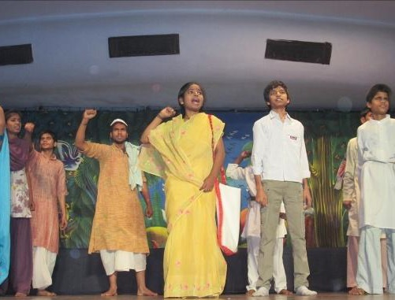
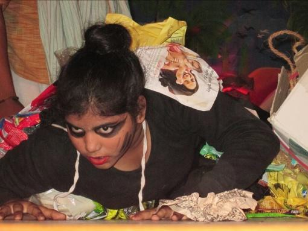
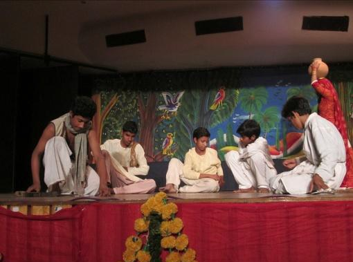
Kathak
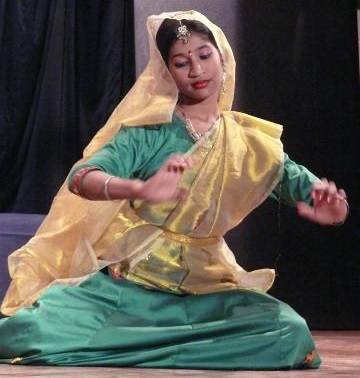
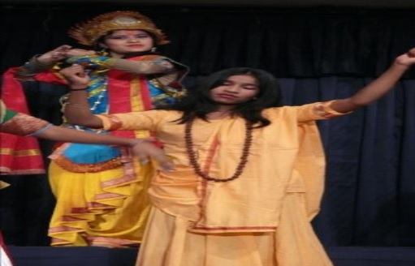
Tabla & Classical Music
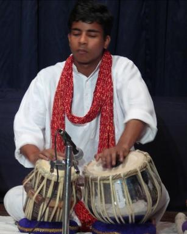
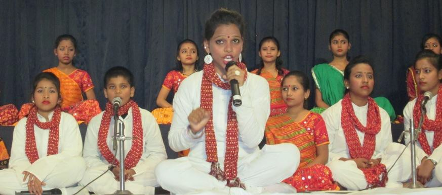
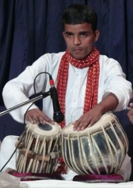
Creative Project Showcase
Creative Project is a six month long exercise where by the workshops are taken on weekends by professionals from various fields. The Project covers activities ranging from Art/Craft, Puppetry, Theatre, Origami, Madhubani Paintings, Photography, Product Design (Architecture) and many more.
Every year, a Creative Project Showcase is held where children of Vidya & Child are given an opportunity to showcase their beautiful creations. Also, professionals from different fields facilitate creative sessions
like Film Making, Interior Designing, Documentary, Pottery Making etc.
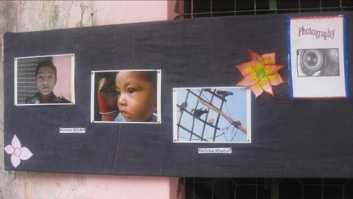
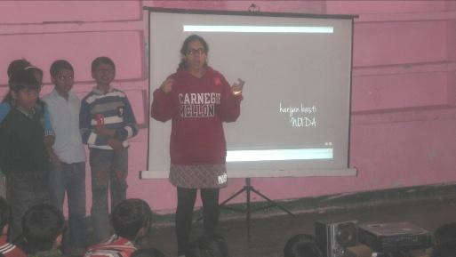
100 + children from Class III to XII participated.
Creative Activities - Film Making, Interior Designing, Documentary Making, Pottery and many more.
Natya Diwas
Natya Diwas was celebrated at the Khoda centre where students of
School Programme from Khoda, Vatika and Barola centre
participated and showcased their performance through plays like
'Cinderella', 'Importance of Education', 'Aladdin' and 'Pied Piper'. The
parents of the students were invited as the audience.
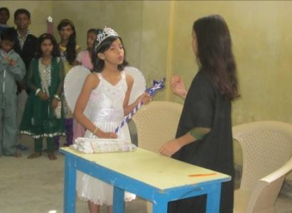
Mini I CAN' showcase at RBS Office, Gurgaon
A showcase was organized by 26 children of classes VI - XII. They also
screened their movie. Children learning programming interacted with RBS
employees and shared their knowledge about gaming software and also
displayed their games. RBS employees tried their hand at games developed
by our children.
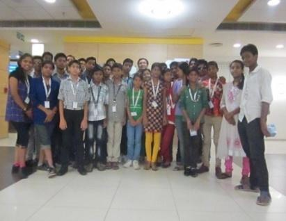
Atelier Bachpan Theatre Festival
25 children performed an English Opera called 'Amused To Death'
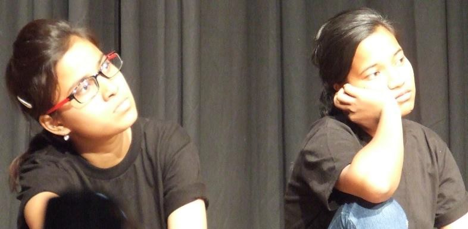
International Art Week
Children performed Kathak & Tabla at NCERT
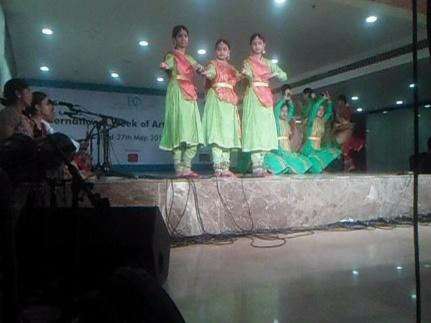
Events at our Corporate Partners
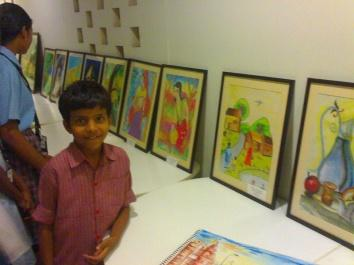
Painting Exhibition at Genpact Office
Cultural Event by HCL where children gave Kathak and Tabla performance
Children performed Kathak at Innodata Annual Day
Hum Kadam Event with staff at EDMC Government School
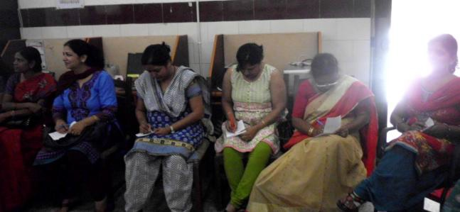
Other Visits & Excursions
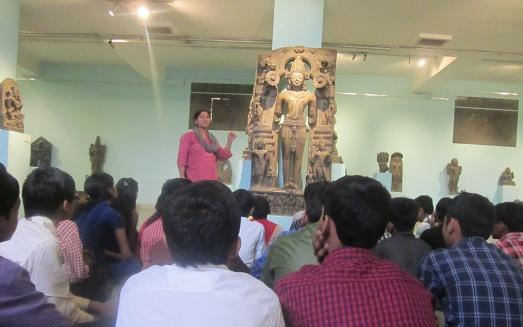
National Museum
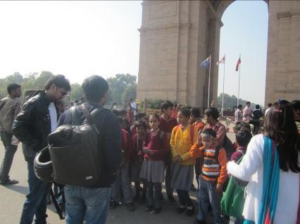
India Gate Architecture Trip
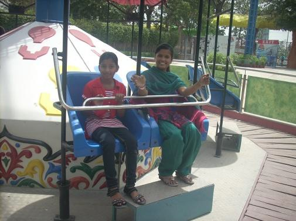
Delhi Rides
Painting Exhibition at Genpact Office
Cultural Event by HCL where children gave Kathak and Tabla performance
Children performed Kathak at Innodata Annual Day
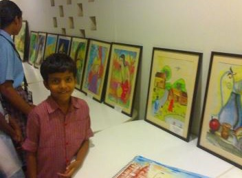
Community Rally for awareness
Girls of Bal Balika Pratibha Vidyalaya, along with teachers, Vidya & Child
team, TMF Volunteers and Magic Bus staff, walked in Kalandar Colony to
raise awareness about the Importance of Education.
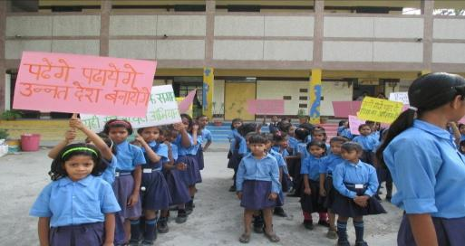
Apna Utsav Event
It was organized at the EDMC Centre in March (March being the
International Women's Month) for the mothers of all the students. They
were given an opportunity to talk about their own childhood and their
dreams for their children. They also participated by singing, dancing
and making grafitti.
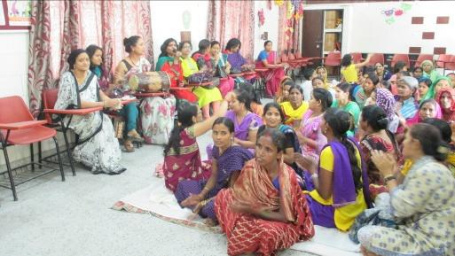
Film made by children won 1st prize at International Children Film Festival - Nov 2011
Our children's film 'Hamari Duniya' based on water conservation won the first prize in the Little Director's
category of the International Children's Film Festival 2011. The film was a team effort of 14 children who
have been learning film making from a volunteer since the last three years.